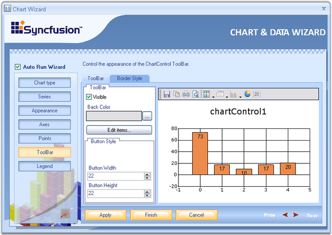
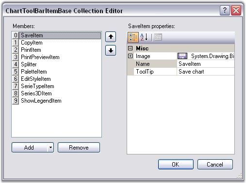
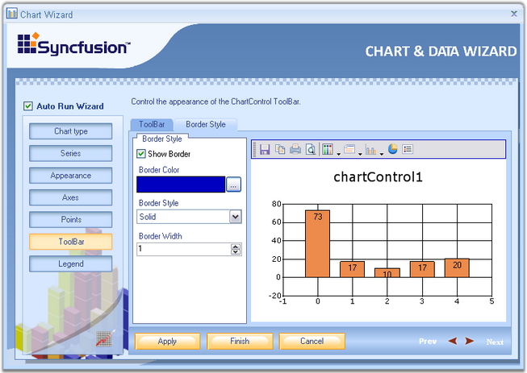

The final option in the Chart Wizard is the ChartControl ToolBar. It has two tabs.
· ToolBar
Under this tab, the user can customize the toolbar's back color, button style as well as set width and Height for the buttons through the respective options.

Figure 19: ToolBar button selected in ChartWizard
· Edit Item
Clicking the Edit Items button will invoke the below editor. It provides options to change the image, name and tooltip for individual items.

Figure 20: Editing ToolBar Items
· Border Style
Toolbar's border, border style, border width and border color can be set through this tab.

Figure 21: Customizing the Border Appearance of the ToolBar
See Also